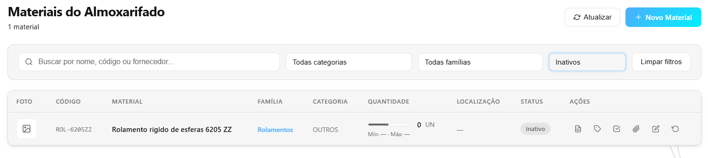
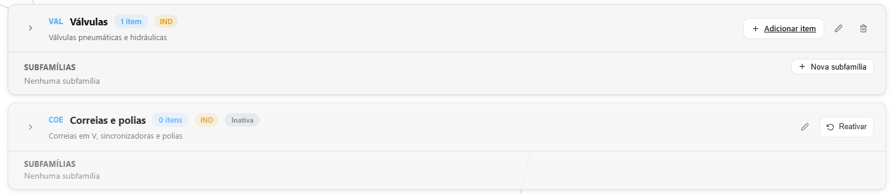
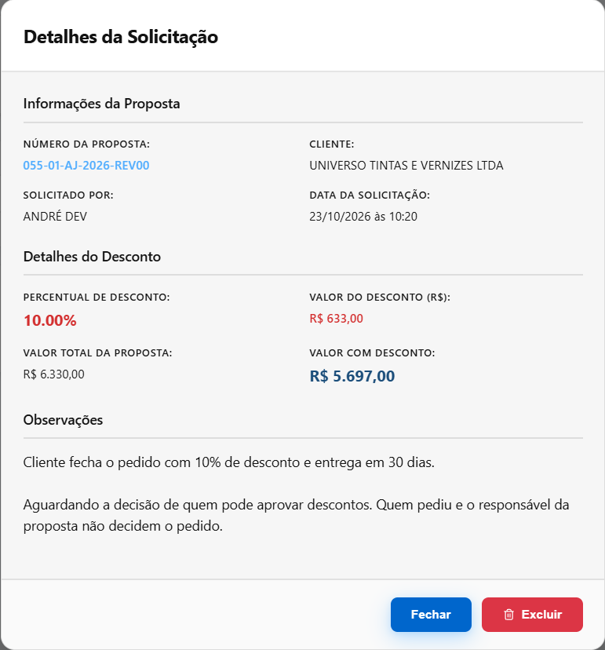

O que foi feito no sistema nesta semana
Semana de 11/10 a 17/10/2026 · CRM GMP Industriais
Na tela, o painel do Almoxarifado passou a mostrar quanto tempo um material leva da chegada até entrar no estoque, os cadastros desativados ganharam o botão de reativar, e as telas passaram a mostrar só os botões que funcionam para cada pessoa e cada situação. Por baixo, foi uma semana de motor: desfazer um lançamento não deixa mais o estoque e os números de série sem bater, a entrega de material não baixa o estoque pela metade, um cadastro salvo por uma pessoa não apaga em silêncio o que outra acabou de mudar, e um usuário desativado sai do sistema na hora. Foram cerca de 44 horas de trabalho, divididas entre o desfazer de lançamentos, o cadastro de materiais, os usuários e acessos, a requisição, o recebimento e as propostas.
O que você já pode ver na tela
Painel do Almoxarifado: o tempo médio de recebimento
Onde: Almoxarifado → Dashboard, na fileira de cartões do alto.
Antes: o painel mostrava giro do estoque, faltas, atendimento e requisições no prazo, mas nada sobre o recebimento. Não havia como saber se a nota que chega fica um dia ou uma semana parada antes de virar estoque.
Agora: um cartão novo, “Tempo médio de recebimento”, mostra em horas quanto tempo o material leva da chegada até a entrada no estoque, com a mediana e o período considerado. Sem recebimento concluído no período, o cartão diz “sem recebimentos concluídos no período”, em vez de mostrar um zero enganoso.

Material, família e grupo de fornecedores desativados voltam com um clique
Onde: Almoxarifado → Materiais (filtro “Todos status” → “Inativos”); Almoxarifado → Configurações → Famílias; Compras → Fornecedores homologados (“Mostrar grupos desativados”).
Antes: o que era desativado sumia de todas as telas. Um material inativado por engano não tinha volta pela tela, e o mesmo valia para a família de materiais e para o grupo de fornecedores. O botão “Remover grupo” chegava a dar erro e deixar o grupo na lista.
Agora: a lista de Materiais tem o filtro “Inativos”, com o selo Inativo e o botão Reativar. A aba Famílias mostra as inativas no fim da lista, com o selo Inativa e o Reativar. Em Fornecedores homologados, os grupos removidos ficam numa seção própria, com Reativar, e os fornecedores continuam ligados a eles. E inativar um material que ainda tem saldo passou a ser recusado, com a mensagem dizendo quanto há e o que fazer antes — senão aquelas peças ficavam presas, sem poder sair.


Aprovação de desconto: só decide quem pode, e não quem pediu
Onde: Comercial → Aprovações.
Antes: os botões Aprovar e Rejeitar apareciam para qualquer um — inclusive para o próprio vendedor que tinha pedido o desconto — e funcionavam.
Agora: só vê os botões quem tem a permissão de aprovar descontos e não é quem pediu, o responsável ou quem criou a proposta. Para os outros aparece “Aguardando a decisão de quem pode aprovar descontos. Quem pediu e o responsável da proposta não decidem o pedido.” Quando o documento da proposta é recusado por causa do desconto, a tela passou a dizer o motivo, em vez de um “Erro ao gerar PDF” sem explicação.

Usuário desativado vê “Sessão encerrada” e sai na hora
Onde: na tela de entrada do sistema.
Antes: quem era desativado continuava usando o sistema, e até o chat, por até 24 horas, se já estivesse com a tela aberta. E quem errava a senha via a página recarregar com “Sessão expirada”, e a mensagem sumia.
Agora: na primeira ação depois de desativada, a pessoa volta à tela de entrada com “Sessão encerrada — o seu usuário foi desativado ou removido. Fale com o administrador do sistema.” O chat aberto cai na mesma hora. Senha errada mostra “Email ou senha inválidos”, e a mensagem fica.

O que foi feito por baixo — e por que importa
Parte do trabalho não muda a aparência das telas: é o “motor” que faz as contas e guarda as informações. Quando ele erra, o erro aparece depois, em forma de estoque que não bate ou de material que some. Esta semana, no motor:
Desfazer um lançamento não deixa estoque nem números de série trocados
O problema: uma saída de 2 peças com número de série é devolvida e, depois, alguém desfaz a saída. O sistema devolvia as 2 peças de novo: estoque 4, com só 2 peças na prateleira. Em outros casos, um desfazer que falhava no meio deixava metade feita — o estoque mudava, mas o registro dizia que nada tinha acontecido, e desfazer de novo mexia no estoque outra vez. E, com duas pessoas mexendo no mesmo material ao mesmo tempo (uma desfazendo, outra dando saída), o estoque podia ficar negativo.
O que foi feito: o sistema passou a conferir o que já voltou para o estoque, por qualquer caminho, antes de devolver de novo — e diz quanto já voltou e quanto falta. Desfazer um lançamento agora é tudo ou nada: se algo falha no meio, volta tudo como estava. Quem mexe no mesmo material ao mesmo tempo espera a vez. E desfazer um ajuste de material de cliente passou a ser só do Administrador do almoxarifado.
O que isso evita: estoque “a mais” no sistema que não existe na prateleira, e números de série que dizem “em estoque” para peças que já foram embora.
Requisição: a entrega não baixa o estoque pela metade, e o material da caixa não some
O problema: uma requisição pede o mesmo material em duas linhas, mas só há 2 peças. O almoxarife confirmava 2 + 2: o sistema entregava a primeira linha, recusava a segunda — e o estoque já tinha baixado. A separação também aceitava quantidade negativa ou texto no lugar do número e respondia “Separação registrada”. A requisição de um material que tinha sido inativado era aprovada e ficava parada para sempre. Uma requisição “Parcialmente Atendida” com material separado na caixa podia ser encerrada, e o material da caixa sumia sem registro; já a “Em Separação” com a caixa vazia ficava presa, sem botão para cancelar nem encerrar. E contar 0 numa prateleira que guardava material já separado para uma requisição gravava sem aviso: na hora da entrega, o almoxarife encontrava “Máximo: 0” e não sabia por quê.
O que foi feito: a entrega confere tudo antes de mexer no estoque; se não dá para entregar tudo, recusa antes e diz o máximo possível. As janelas de separação e de entrega dividem o que há entre as linhas do mesmo material. A separação recusa o que não dá para separar, sem mudar nada. Material inativo não é aprovado, enviado nem separado, e a mensagem diz quem pode reativá-lo. E, se a aprovação falha no meio, nenhum material fica preso à requisição. No detalhe da requisição, cada situação mostra o botão certo: com material na caixa, no lugar do Encerrar aparece a frase que manda entregá-lo ou devolvê-lo à prateleira; com a caixa vazia, aparece Cancelar ou Encerrar. E o ajuste que deixa uma requisição sem material grava e mostra um aviso amarelo, que não some sozinho, dizendo qual requisição foi afetada.
O que isso evita: estoque que não bate com a prateleira depois de uma entrega recusada, requisição esquecida esperando um material que nunca vai sair, material que some da caixa sem registro e o almoxarife descobrindo o problema só na hora de entregar.
Duas pessoas no mesmo cadastro: quem salva por último não apaga o que o outro mudou
O problema: a Ana abre o cadastro de um material para corrigir o nome. Enquanto isso, o João muda a unidade de medida e salva. Quando a Ana salvava, a unidade voltava à antiga — sem ninguém perceber. O mesmo acontecia com o custo que acabava de vir da nota, com a família do material e com o controle por lote ou número de série. E ligar o controle por lote num material que já tinha saldo sem lote travava a saída daquelas peças.
O que foi feito: ao salvar, o sistema compara com o que estava na tela quando o cadastro foi aberto. Se alguém mudou um campo no meio, nada é gravado, e a mensagem diz qual campo mudou e pede para recarregar. Ligar lote ou série num material com saldo sem identificação, trocar o dono de um material de cliente com histórico e cadastrar material já com saldo passaram a pedir a permissão certa. A organização das famílias (principal e subfamília) também deixou de aceitar combinações que não fazem sentido.
O que isso evita: cadastro que “desfaz sozinho” uma correção feita por outra pessoa, e peças presas no estoque sem poder sair.
Usuários: quem foi desativado sai, e a empresa nunca fica sem administrador
O problema: um usuário desativado continuava com acesso por até 24 horas, inclusive ao chat. Dois super administradores podiam rebaixar ou excluir um ao outro ao mesmo tempo, e a empresa ficava sem nenhum. E qualquer pessoa logada conseguia ler o cadastro e as permissões de qualquer colega.
O que foi feito: o desativado perde o acesso na primeira ação e cai do chat na hora. Sempre sobra um super administrador: o segundo pedido é recusado. O cadastro e as permissões de cada pessoa ficam só com ela mesma e com quem cuida dos usuários; nas listas de “responsável”, os outros veem só nome e e-mail. Os campos de sim ou não do cadastro só aceitam sim ou não.
O que isso evita: ex-colaborador mexendo no sistema depois de desligado, ninguém conseguindo liberar acesso, e dado pessoal circulando para quem não precisa dele.
A proposta guardada é a proposta que você vê
O problema: salvar uma proposta pela tela apagava informações que tinham vindo da cópia ou da geração automática (projeto, contatos, idioma, moeda). Uma cláusula nova incluída na visualização não aparecia no PDF e sumia na edição seguinte. Ao trocar o cliente, a capa continuava com o contato do cliente anterior. E uma proposta com desconto acima de 5% sem aprovação podia sair como enviada.
O que foi feito: salvar grava só o que foi mudado. A cláusula nova entra no lugar certo, antes da página de assinatura. Trocar o cliente troca também o contato da capa. E a proposta com desconto acima de 5% só é enviada, e só gera o documento, depois da aprovação de outra pessoa.
O que isso evita: mandar ao cliente uma proposta com o contato, a cláusula ou o desconto errado.
Além disso: o recebimento que já deu entrada no estoque não muda mais de quantidade, lote, série ou valor pela conferência ou pela nota (na tela, esses campos ficam em cinza, com o motivo); desfazer uma nota reabre o pedido de compra certo; o Excel de pedidos de compra passou a levar IPI, frete e encargos, e volta com o mesmo total; e as barras de abas de Administração, Minha Conta, Ordens de Serviço e Configurações do Almoxarifado ficaram iguais, rolando de lado no celular.
Para onde foi o tempo
Cerca de 44 horas de desenvolvimento nesta semana.
Tempo por atividade
| Atividade | Horas |
|---|---|
| Desfazer lançamentos e devoluções sem estoque nem séries trocados | 9 h |
| Cadastro de materiais, famílias e grupos de fornecedores | 9 h |
| Usuários, acessos e saída do desativado | 9 h |
| Requisição: separação, entrega e aprovação | 8 h |
| Recebimento, conferência e o tempo de recebimento no painel | 5 h |
| Propostas: salvamento, cláusulas e aprovação de desconto | 4 h |
| Total | 44 h |
Foi uma semana de motor. As mudanças de tela foram pequenas e rápidas — menos de 1 hora no total —, porque o que estava errado não era a aparência, e sim o que acontece por baixo quando duas pessoas mexem no mesmo material ao mesmo tempo, ou quando algo falha no meio de uma operação. Esses erros quase nunca aparecem num teste feito à mão: só aparecem quando a situação é repetida muitas vezes. Por isso quase metade do tempo foi para as conferências automáticas — robôs que repetem centenas de situações a cada mudança (a devolução no meio de um desfazer, dois administradores excluindo um ao outro, duas abas salvando o mesmo cadastro) para que o que já funciona não quebre escondido. Outros 40% foram para planejar cada correção antes de mexer, revisar o que foi feito e atualizar os manuais.
As horas são estimadas pelo registro do trabalho salvo ao longo da semana. Pesquisa, conversas e testes feitos à mão não entram — o número real é maior.
Quer conferir?
- Abra Almoxarifado → Dashboard e veja o cartão “Tempo médio de recebimento”.
- Abra Almoxarifado → Materiais, escolha “Inativos” no filtro “Todos status” e clique em Reativar num material.
- Abra Almoxarifado → Configurações → Famílias e desça até o fim: as famílias inativas aparecem com o selo e o Reativar.
- Abra Compras → Fornecedores homologados e, depois de remover um grupo, clique em “Mostrar grupos desativados”.
- Abra Comercial → Aprovações com o usuário que pediu um desconto: o pedido aparece com “Aguardando a decisão de quem pode aprovar descontos”.